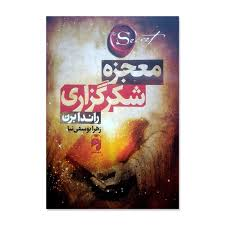

کتاب «معجزه شکرگزاری» نوشتهی راندا برن، یکی از آثار الهامبخش در حوزه رشد فردی است که بر قدرت شکرگزاری در تغییر کیفیت زندگی تأکید دارد. نویسنده در این کتاب توضیح میدهد که قدردانی از داشتهها میتواند نگرش انسان را نسبت به زندگی تغییر دهد و مسیر رسیدن به شادی، آرامش و موفقیت را هموارتر کند.
این کتاب بر پایه مجموعهای از تمرینهای عملی طراحی شده است که خواننده را در یک دوره ۲۸ روزه همراهی میکند. هر روز تمرینی ساده اما تأثیرگذار ارائه میشود که به فرد کمک میکند توجه خود را از کمبودها به نعمتها و فرصتهای زندگی معطوف کند. به مرور، این تمرینها به یک عادت ذهنی تبدیل میشوند و باعث میشوند فرد نگاه مثبتتر و آگاهانهتری به زندگی داشته باشد.
راندا برن در این اثر تلاش میکند نشان دهد که شکرگزاری تنها یک احساس یا رفتار ساده نیست، بلکه میتواند نیرویی قدرتمند برای ایجاد تغییرات مثبت در بخشهای مختلف زندگی مانند روابط، سلامت، موفقیت شغلی و آرامش درونی باشد. از نگاه نویسنده، زمانی که فرد با قلبی سپاسگزار به زندگی نگاه میکند، بیشتر متوجه نعمتها و فرصتهایی میشود که شاید پیش از آن نادیده میگرفت. «معجزه شکرگزاری» با زبانی ساده و قابل فهم نوشته شده و به همین دلیل برای طیف گستردهای از مخاطبان قابل استفاده است. این کتاب نهتنها خواننده را به تفکر درباره داشتههایش دعوت میکند، بلکه او را به انجام تمرینهای عملی تشویق میکند تا اثر شکرگزاری را در زندگی روزمره خود تجربه کند.
به طور کلی، این کتاب یادآوری میکند که تغییرات بزرگ در زندگی گاهی از سادهترین عادتها آغاز میشوند؛ عادتی مانند قدردانی از چیزهایی که همین حالا در زندگی ما وجود دارند. همین نگاه میتواند به مرور احساس رضایت، امید و انگیزه بیشتری در مسیر زندگی ایجاد کند.
سبد خرید